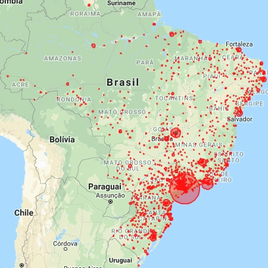
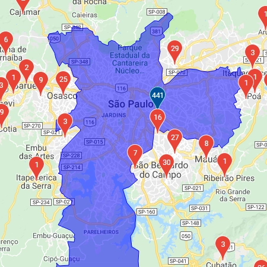

Sobre o Projeto
Através de Técnica de Visualização de Dados em Georeferência, e do cruzamento de dados a partir do Censo (dos últimos anos) do INEP, ENADE, IBGE e outras entidades,
esta ferramenta visa apresentar a concentração das caracteristicas dos cursos de computação, e similares, no Território Nacional, sejam presenciais ou a distância, de instituições públicas ou privadas.
Este trabalho surgiu a partir da iniciativa do Prof. Ronaldo Celso Messias Correia da UNESP Campus de Presidente Prudente, membro da Comissão de Educação da SBC. Atualmente está sob a responsabilidade da Diretoria de Educação.
Para os cursos do mapa é apresentado dados como:
Este trabalho surgiu a partir da iniciativa do Prof. Ronaldo Celso Messias Correia da UNESP Campus de Presidente Prudente, membro da Comissão de Educação da SBC. Atualmente está sob a responsabilidade da Diretoria de Educação.
Para os cursos do mapa é apresentado dados como:
- Instituição de Ensino;
- Local de Oferta;
- Área de Conhecimento;
- Modalidade do Curso;
- Carga Horária;
- Ano de início;
- Grau Acadêmico;
- Mantenedora;
- Tipo de Rede (Pública ou Privada);
- Entre outros ...
